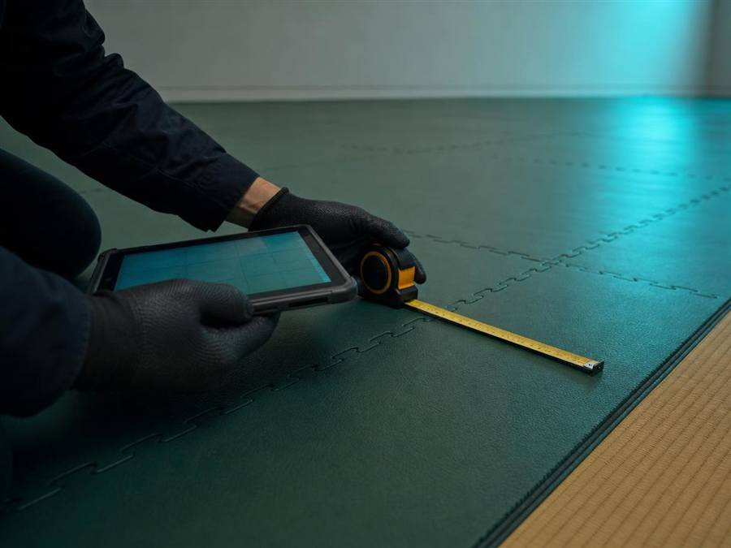

Paso 1
Diagnóstico
Visita técnica gratuita: medimos la superficie e identificamos el tipo de piso o equipo y su estado real, antes de cotizar nada.
VesUn informe con m² y tipo de material, no una cotización a ciegas por teléfono.
